Chapter 2 Machine Learning Capstone Project
In this chapter we will have a look at the SpaceX dataset, which is used for the final capstone project in IBM Python Data Science Professional Certificate. Originally the project is Python based, but my aim is to do the exact things in R using the Tidyverse dialect.
The project contains the following parts:
Data , Data Wrangling, Data Visualizations, Interactive Maps using Leaflet, R Shiny app and Machine Learning models.
2.1 Data Collection
In this chapter we will collect the data for the SpaceX project using an API. First we will connect to an URL to retrieve the data:
spacex_url='https://cf-courses-data.s3.us.cloud-object-storage.appdomain.cloud/IBM-DS0321EN-SkillsNetwork/datasets/API_call_spacex_api.json'
response = httr::GET(spacex_url)
print(response$status_code)## [1] 200print(response)## Response [https://cf-courses-data.s3.us.cloud-object-storage.appdomain.cloud/IBM-DS0321EN-SkillsNetwork/datasets/API_call_spacex_api.json]
## Date: 2022-02-17 12:46
## Status: 200
## Content-Type: application/json
## Size: 270 kBWith status code 200 the connection was successful. Let us retrieve the JSON content using the jsonlite::fromJSON:
data = fromJSON(spacex_url)We notice that a lot of the data are IDs. For example the rocket column has no information about the rocket just an identification number.
We will now use the API again to get information about the launches using the IDs given for each launch. Specifically we will be using columns rocket, paayloads, launchpad, and cores. Moreover we need to extract primary payload, extract the date of date_utc as well as unfold the cores tibble into separate columns.
data <- data %>%
select(rocket,payloads,launchpad,cores,flight_number,date_utc) %>%
hoist(payloads,payload_new = 1) %>%
unnest(cores) %>%
select(-c("payloads")) %>%
rename(payloads = payload_new) %>%
mutate(Date = date(date_utc))Let us have a look at the data types of the columns:
str(data)## tibble [113 × 15] (S3: tbl_df/tbl/data.frame)
## $ rocket : chr [1:113] "5e9d0d95eda69955f709d1eb" "5e9d0d95eda69955f709d1eb" "5e9d0d95eda69955f709d1eb" "5e9d0d95eda69955f709d1eb" ...
## $ payloads : chr [1:113] "5eb0e4b5b6c3bb0006eeb1e1" "5eb0e4b6b6c3bb0006eeb1e2" "5eb0e4b6b6c3bb0006eeb1e3" "5eb0e4b7b6c3bb0006eeb1e5" ...
## $ launchpad : chr [1:113] "5e9e4502f5090995de566f86" "5e9e4502f5090995de566f86" "5e9e4502f5090995de566f86" "5e9e4502f5090995de566f86" ...
## $ core : chr [1:113] "5e9e289df35918033d3b2623" "5e9e289ef35918416a3b2624" "5e9e289ef3591814873b2625" "5e9e289ef3591855dc3b2626" ...
## $ flight : int [1:113] 1 1 1 1 1 1 1 1 1 1 ...
## $ gridfins : logi [1:113] FALSE FALSE FALSE FALSE FALSE FALSE ...
## $ legs : logi [1:113] FALSE FALSE FALSE FALSE FALSE FALSE ...
## $ reused : logi [1:113] FALSE FALSE FALSE FALSE FALSE FALSE ...
## $ landing_attempt: logi [1:113] FALSE FALSE FALSE FALSE FALSE FALSE ...
## $ landing_success: logi [1:113] NA NA NA NA NA NA ...
## $ landing_type : chr [1:113] NA NA NA NA ...
## $ landpad : chr [1:113] NA NA NA NA ...
## $ flight_number : int [1:113] 1 2 3 4 5 6 7 8 9 10 ...
## $ date_utc : chr [1:113] "2006-03-24T22:30:00.000Z" "2007-03-21T01:10:00.000Z" "2008-08-03T03:34:00.000Z" "2008-09-28T23:15:00.000Z" ...
## $ Date : Date[1:113], format: "2006-03-24" "2007-03-21" "2008-08-03" "2008-09-28" ...We will now use the API again to get information about the launches using the IDs given for each launch. Specifically we will be using columns rocket, payloads, launchpad, and cores.
From the rocket we would like to learn the booster name
From the payload we would like to learn the mass of the payload and the orbit that it is going to
From the launchpad we would like to know the name of the launch site being used, the longitude, and the latitude.
From cores we would like to learn the outcome of the landing, the type of the landing, number of flights with that core, whether gridfins were used, whether the core is reused, whether legs were used, the landing pad used, the block of the core which is a number used to seperate version of cores, the number of times this specific core has been reused, and the serial of the core.
data <- data %>%
add_column(BoosterVersion=NA,Longitude=NA,Latitude=NA,LaunchSite=NA,PayloadMass=NA,Orbit=NA,ReusedCount=NA,Block=NA, Serial=NA)
for (i in 1:nrow(data)){
rocket_url = str_c("https://api.spacexdata.com/v4/rockets/",data$rocket[i])
launchpad_url = str_c("https://api.spacexdata.com/v4/launchpads/",data$launchpad[i])
payloads_url = str_c("https://api.spacexdata.com/v4/payloads/",data$payloads[i])
core_url = str_c("https://api.spacexdata.com/v4/cores/",data$core[i])
response_rocket = fromJSON(rocket_url)
response_launchpad = fromJSON(launchpad_url)
response_payloads = fromJSON(payloads_url)
response_core = fromJSON(core_url)
data$BoosterVersion[i] <- ifelse(is.null(response_rocket$name),NA,
response_rocket$name)
data$Longitude[i] <- ifelse(is.null(response_launchpad$longitude),NA,
response_launchpad$longitude)
data$Latitude[i] <- ifelse(is.null(response_launchpad$latitude),NA,
response_launchpad$latitude)
data$LaunchSite[i] <- ifelse(is.null(response_launchpad$name),NA,
response_launchpad$name)
data$PayloadMass[i] <- ifelse(is.null(response_payloads$mass_kg),NA,
response_payloads$mass_kg)
data$Orbit[i] <- ifelse(is.null(response_payloads$orbit),NA,
response_payloads$orbit)
data$ReusedCount[i] <- ifelse(is.null(response_core$reuse_count),NA,
response_core$reuse_count)
data$Block[i] <- ifelse(is.null(response_core$block),NA,
response_core$block)
data$Serial[i] <- ifelse(is.null(response_core$serial),NA,
response_core$serial)
}The outcome of a launch will be a concenation of “landing_success” and “landing_type”:
data$Outcome = str_c(data$landing_success,data$landing_type,sep=" ")Now we select the relevant columns and filter the observations where Falcon 9 was used.
data <- data %>%
select(FlightNumber,Date,BoosterVersion,PayloadMass,Orbit,
LaunchSite,Outcome,Flights,GridFins,Reused,
Legs,LandingPad,Block,ReusedCount,Serial,Longitude,
Latitude) %>%
filter(BoosterVersion == "Falcon 9")Let us have a final look at the data before we move on to data wrangling:
head(data,width=Inf)2.2 Data Wrangling
In this section we will take a look at the data collected in the previous section. We will deal with missing values and introduce an outcome class variable to distinguish between successful and unsuccessful landings.
In case the data collection fails, we begin by loading the pre-downloaded data set:
Lets have a glimpse at the dataframe:
glimpse(data)## Rows: 99
## Columns: 17
## $ FlightNumber <dbl> 6, 7, 8, 9, 10, 11, 12, 13, 14, 15, 16, 17, 18, 19, 20, 21, 22, 23, 24, 25, 26, 27, 28, 29, 30, 31, 32, 33, 34, 35, 36, 37, 38, 39, 40, 41, 42, 43, 44, 45, 46, 47, 48…
## $ Date <date> 2010-06-04, 2010-12-08, 2012-05-22, 2012-10-08, 2013-03-01, 2013-09-29, 2013-12-03, 2014-01-06, 2014-04-18, 2014-07-14, 2014-08-05, 2014-09-07, 2014-09-21, 2015-01-1…
## $ BoosterVersion <chr> "Falcon 9", "Falcon 9", "Falcon 9", "Falcon 9", "Falcon 9", "Falcon 9", "Falcon 9", "Falcon 9", "Falcon 9", "Falcon 9", "Falcon 9", "Falcon 9", "Falcon 9", "Falcon 9"…
## $ PayloadMass <dbl> NA, NA, 525.00, 400.00, 677.00, 500.00, 3170.00, 3325.00, 2296.00, 1316.00, 4535.00, 4428.00, 2216.00, 2395.00, 570.00, 1954.00, 1898.00, 4707.00, 2477.00, 2034.00, 5…
## $ Orbit <chr> "LEO", "LEO", "LEO", "ISS", "ISS", "PO", "GTO", "GTO", "ISS", "LEO", "GTO", "GTO", "ISS", "ISS", "ES-L1", "GTO", "ISS", "GTO", "ISS", "LEO", "PO", "GTO", "ISS", "GTO"…
## $ LaunchSite <chr> "CCSFS SLC 40", "CCSFS SLC 40", "CCSFS SLC 40", "CCSFS SLC 40", "CCSFS SLC 40", "VAFB SLC 4E", "CCSFS SLC 40", "CCSFS SLC 40", "CCSFS SLC 40", "CCSFS SLC 40", "CCSFS …
## $ Outcome <chr> NA, NA, NA, NA, NA, "FALSE Ocean", NA, NA, "TRUE Ocean", "TRUE Ocean", NA, NA, "FALSE Ocean", "FALSE ASDS", "TRUE Ocean", NA, "FALSE ASDS", NA, NA, "TRUE RTLS", "FALS…
## $ Flights <dbl> 1, 1, 1, 1, 1, 1, 1, 1, 1, 1, 1, 1, 1, 1, 1, 1, 1, 1, 1, 1, 1, 1, 1, 1, 1, 1, 1, 1, 1, 1, 1, 1, 2, 1, 1, 1, 2, 1, 1, 1, 1, 1, 1, 2, 1, 2, 2, 1, 2, 2, 1, 2, 2, 1, 1, 2…
## $ GridFins <lgl> FALSE, FALSE, FALSE, FALSE, FALSE, FALSE, FALSE, FALSE, FALSE, FALSE, FALSE, FALSE, FALSE, TRUE, TRUE, FALSE, TRUE, FALSE, TRUE, TRUE, TRUE, TRUE, TRUE, TRUE, TRUE, T…
## $ Reused <lgl> FALSE, FALSE, FALSE, FALSE, FALSE, FALSE, FALSE, FALSE, FALSE, FALSE, FALSE, FALSE, FALSE, FALSE, FALSE, FALSE, FALSE, FALSE, FALSE, FALSE, FALSE, FALSE, FALSE, FALSE…
## $ Legs <lgl> FALSE, FALSE, FALSE, FALSE, FALSE, FALSE, FALSE, FALSE, TRUE, TRUE, FALSE, FALSE, FALSE, TRUE, TRUE, FALSE, TRUE, FALSE, TRUE, TRUE, TRUE, TRUE, TRUE, TRUE, TRUE, TRU…
## $ LandingPad <chr> NA, NA, NA, NA, NA, NA, NA, NA, NA, NA, NA, NA, NA, "5e9e3032383ecb761634e7cb", NA, NA, "5e9e3032383ecb761634e7cb", NA, "5e9e3032383ecb6bb234e7ca", "5e9e3032383ecb267…
## $ Block <dbl> 1, 1, 1, 1, 1, 1, 1, 1, 1, 1, 1, 1, 1, 1, 1, 1, 1, 1, 1, 1, 1, 1, 2, 2, 2, 2, 2, 2, 3, 3, 3, 3, 2, 3, 3, 3, 3, 3, 3, 4, 3, 4, 4, 3, 4, 3, 3, 4, 3, 3, 4, 4, 4, 4, 5, 4…
## $ ReusedCount <dbl> 0, 0, 0, 0, 0, 0, 0, 0, 0, 0, 0, 0, 0, 0, 0, 0, 0, 0, 0, 0, 0, 0, 1, 0, 1, 0, 1, 0, 0, 1, 1, 0, 1, 1, 0, 1, 1, 1, 0, 1, 1, 1, 1, 1, 0, 1, 1, 1, 1, 1, 0, 1, 1, 1, 3, 1…
## $ Serial <chr> "B0003", "B0004", "B0005", "B0006", "B0007", "B1003", "B1004", "B1005", "B1006", "B1007", "B1008", "B1011", "B1010", "B1012", "B1013", "B1014", "B1015", "B1016", "B10…
## $ Longitude <dbl> -80.57737, -80.57737, -80.57737, -80.57737, -80.57737, -120.61083, -80.57737, -80.57737, -80.57737, -80.57737, -80.57737, -80.57737, -80.57737, -80.57737, -80.57737, …
## $ Latitude <dbl> 28.56186, 28.56186, 28.56186, 28.56186, 28.56186, 34.63209, 28.56186, 28.56186, 28.56186, 28.56186, 28.56186, 28.56186, 28.56186, 28.56186, 28.56186, 28.56186, 28.561…Lets first identify and calculate the percentage of the missing values in each attribute
data %>%
select(which(colSums(is.na(.))>0)) %>%
summarise_all(~ sum(is.na(.))/n()*100) ## # A tibble: 1 × 3
## PayloadMass Outcome LandingPad
## <dbl> <dbl> <dbl>
## 1 7.07 26.3 31.3Missing values in Outcome refers to both Landing_success and Landing_type being false. These will be replaced by “FALSE FALSE.” We then see, that in the data set, there are several different cases where the booster did not land successfully. Sometimes a landing was attempted but failed due to an accident; for example, True Ocean means the mission outcome was successfully landed to a specific region of the ocean while False Ocean means the mission outcome was unsuccessfully landed to a specific region of the ocean. True RTLS means the mission outcome was successfully landed to a ground pad False RTLS means the mission outcome was unsuccessfully landed to a ground pad.True ASDS means the mission outcome was successfully landed on a drone ship False ASDS means the mission outcome was unsuccessfully landed on a drone ship.
data <- data %>%
mutate(Outcome =
replace(Outcome,is.na(Outcome),"FALSE FALSE")
)To deal with missing values in PayloadsMass we replace NA with mean payload mass:
data <- data %>%
mutate(PayloadMass =
replace(PayloadMass,is.na(PayloadMass),mean(PayloadMass,na.rm=TRUE))
)This leaves us with only the LandingPad column containing missing values. Since most models cannot handle NA, these will be replaced with FALSE:
data <- data %>%
mutate(LandingPad = replace_na(LandingPad,"FALSE"))The data contains several Space X launch facilities: Cape Canaveral Space Launch Complex 40 VAFB SLC 4E , Vandenberg Air Force Base Space Launch Complex 4E (SLC-4E), Kennedy Space Center Launch Complex 39A KSC LC 39A .The location of each Launch Is placed in the column LaunchSite
Next, let’s see the number of launches for each site.
data %>%
group_by(LaunchSite) %>%
count()## # A tibble: 3 × 2
## # Groups: LaunchSite [3]
## LaunchSite n
## <chr> <int>
## 1 CCSFS SLC 40 60
## 2 KSC LC 39A 24
## 3 VAFB SLC 4E 15Then let’s have a look at the different orbits used
data %>%
group_by(Orbit) %>%
count()## # A tibble: 11 × 2
## # Groups: Orbit [11]
## Orbit n
## <chr> <int>
## 1 ES-L1 1
## 2 GEO 1
## 3 GTO 30
## 4 HEO 1
## 5 ISS 23
## 6 LEO 8
## 7 MEO 3
## 8 PO 10
## 9 SO 1
## 10 SSO 6
## 11 VLEO 15Finally let us have a look at the different landing outcomes
data %>%
group_by(Outcome) %>%
count()## # A tibble: 7 × 2
## # Groups: Outcome [7]
## Outcome n
## <chr> <int>
## 1 FALSE ASDS 7
## 2 FALSE FALSE 26
## 3 FALSE Ocean 2
## 4 FALSE RTLS 1
## 5 TRUE ASDS 44
## 6 TRUE Ocean 5
## 7 TRUE RTLS 14True Ocean means the mission outcome was successfully landed to a specific region of the ocean while False Ocean means the mission outcome was unsuccessfully landed to a specific region of the ocean. True RTLS means the mission outcome was successfully landed to a ground pad False RTLS means the mission outcome was unsuccessfully landed to a ground pad.True ASDS means the mission outcome was successfully landed to a drone ship False ASDS means the mission outcome was unsuccessfully landed to a drone ship. None ASDS and None None these represent a failure to land.
For modelling purposes later, we would like to have a landing outcome variable “Class,” where all successful landings are denoted by a “1” and all other by a “0.”
successful_outcomes=c("TRUE ASDS", "TRUE Ocean", "TRUE RTLS")
data <-data %>%
mutate(Class = ifelse(Outcome %in% successful_outcomes,1,0)) Let us finally find the average succesrate:
data %>%
summarise(Class = mean(Class))## # A tibble: 1 × 1
## Class
## <dbl>
## 1 0.636With this we conclude the data wrangling section. In the next section we take a look at different visualizations of the dataset.
2.3 EDA with Visualizations
First, let’s try to see how the FlightNumber (indicating the continuous launch attempts.) and Payload variables would affect the launch outcome.
We can plot out the FlightNumber vs. PayloadMassand overlay the outcome of the launch. We see that as the flight number increases, the first stage is more likely to land successfully. The payload mass is also important; it seems the more massive the payload, the less likely the first stage will return.
data %>%
ggplot(mapping = aes(x=FlightNumber,y=PayloadMass,color=as.factor(Class))) +
geom_point(size = 2) +
scale_color_hue("Mission Outcome",
breaks = c(0,1),
labels = c("Failure","Success")
) +
labs(x="Flight Number", y="Payload Mass (kg)", color="Outcome", title="Payload Mass vs. Flight Number")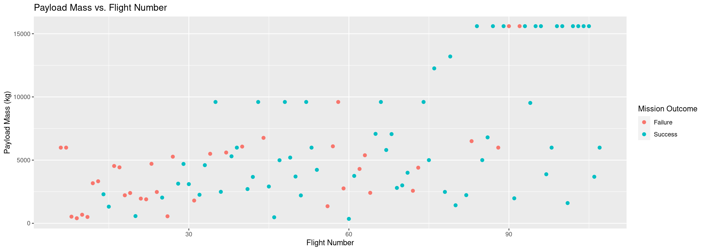 Next we will drill down to each launch site and look at their detailed launch records.
data %>%
ggplot(mapping = aes(x=FlightNumber,y=LaunchSite,color=as.factor(Class))) +
geom_point(size = 2) +
scale_color_hue("Mission Outcome",
breaks = c(0,1),
labels = c("Failure","Success")
) +
labs(x="Flight Number", y="Launch Site", color="Outcome", title="Launch Site vs. Flight Number")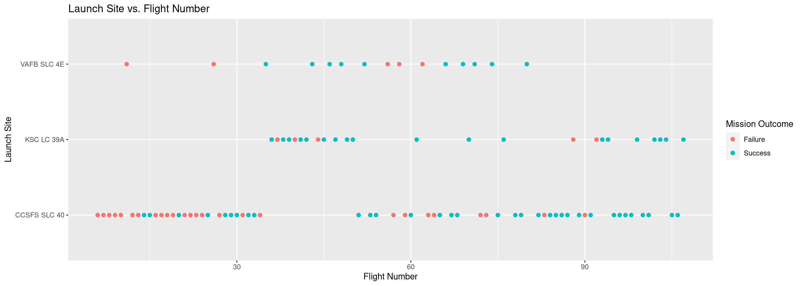 We see that the flight is more likely to succeed from VAFB SLC 4E and KSC LC 39A. Moreover VAFB SLC 4E has not been used for later launches.
We also want to observe if there is any relationship between launch sites and their payload mass.
data %>%
ggplot(mapping = aes(x=PayloadMass,y=LaunchSite,color=as.factor(Class))) +
geom_point(size = 2) +
scale_color_hue("Mission Outcome",
breaks = c(0,1),
labels = c("Failure","Success")
) +
labs(x="Payload Mass (kg)", y="Launch Site", color="Outcome", title="Launch Site vs. Payload Mass")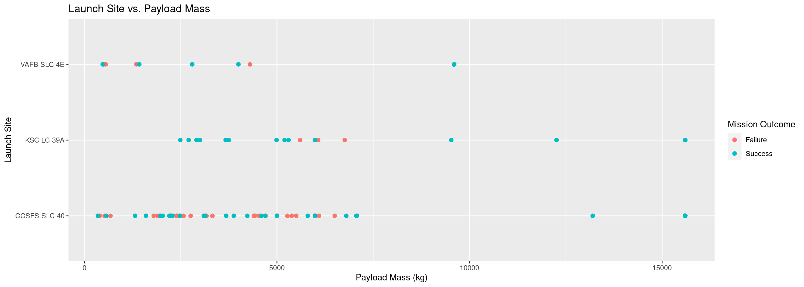 Now if we observe Payload Vs. Launch Site scatter point chart we, that find for the VAFB-SLC launchsite there are no rockets launched for heavy payload mass(greater than 10000).
Next, we want to visually check if there are any relationship between success rate and orbit type.
data %>%
group_by(Orbit) %>%
summarise(success = mean(Class)) %>%
ggplot(aes(x=Orbit,weight=success,fill=Orbit)) +
geom_bar(show.legend=FALSE)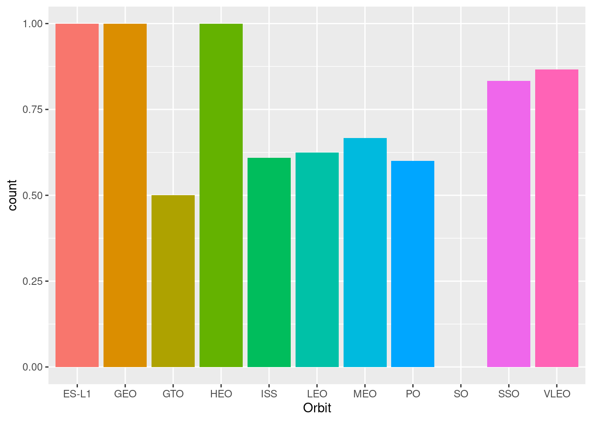
Orbits ES-L1, GEO, HEO and SSO have highest success rates followed by VLEO.
Finally we would like to explore if there is a relationsship between flight number and orbit type used:
data %>%
ggplot(mapping = aes(x=FlightNumber,y=Orbit,color=as.factor(Class))) +
geom_point(size = 2) +
scale_color_hue("Mission Outcome",
breaks = c(0,1),
labels = c("Failure","Success")
) +
labs(x="FlightNumber", y="Orbit", color="Outcome", title="Orbit Type vs Flight Number")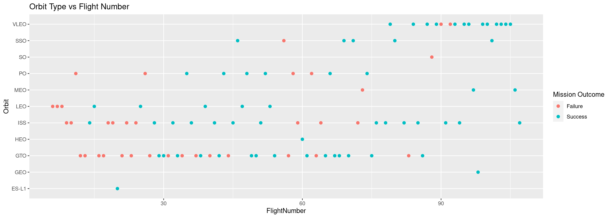 We see that the successful orbit types correlates with later flight numbers. It is not yet evident if the flights are succesful due to choice of orbit og because of experience.
data %>%
mutate(Date=year(Date)) %>%
group_by(Date) %>%
summarise(success = mean(Class)) %>%
ggplot(aes(x=Date,y=success)) +
geom_line() +
scale_x_continuous(breaks = seq(2010,2020),limits=c(2010,2020)) +
scale_y_continuous(limit=c(0,1)) +
labs(x="Year", y="Success Rate", title="Trend in success rate")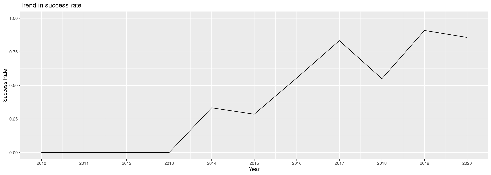
We observe that success rate has been steadily increasing since 2013 with the exception of 2018. As noted earlier it is not possible to determine if the increase is related to use of orbit type of mere experience.
With this, we conclude the visualization of the dataset. In the next section we take a look at the geospatial data related to the launches.
2.4 Interactive Visual Analytics
In this section we will first analyze the geospatial data in the dataset. The spatial data refers primarily to the launch sites. Thus we will have a look at what characterizes the launch sites using an interactive map.
In the second part of this section an interactive dashboard to enable further visual EDA of the dataset has been develop using RShiny.
2.4.1 Map data with Leaflet
The launch success rate may depend on many factors such as payload mass, orbit type, and so on. It may also depend on the location and proximities of a launch site, i.e., the initial position of rocket trajectories. Finding an optimal location for building a launch site certainly involves many factors and hopefully we could discover some of the factors by analyzing the existing launch site locations.
We start by selecting the geospatial data and grouping it by launch site:
nasa <- c(29.55968,-95.08310)
geodata <- data %>%
select(LaunchSite,Latitude,Longitude) %>%
group_by(LaunchSite) %>%
distinct(LaunchSite,Latitude,Longitude)First let us initiate a map centered at the NASA Johnson Space Center in Houston, Tx, and mark the three launch sites on the map:
m <- leaflet(options = leafletOptions(center=nasa,zoom=4)) %>%
addTiles() %>%
addMarkers(lat=geodata$Latitude,lng=geodata$Longitude,popup = geodata$LaunchSite,label=geodata$LaunchSite) %>%
addCircleMarkers(lat=geodata$Latitude,lng=geodata$Longitude,radius=10,color="#d35400",fill=TRUE) %>%
addMarkers(lat=nasa[1],lng=nasa[2],popup = "NASA Johnson Space Center" ,label="NASA JSC") %>%
addCircleMarkers(lat=nasa[1],lng=nasa[2],radius=10,color="#d35400",fill=TRUE)
mNext, let’s try to enhance the map by adding the launch outcomes for each site, and see which sites have high success rates. For this we need the launch data with outcome included. To facilitate colouring icons later we add a Colour column, where Colour is ‘green’ is Class is 1 and Colour is ‘red’ if Class is 0:
launchdata <- data %>%
select(LaunchSite,Latitude,Longitude,Class) %>%
add_column(Color = NA) %>%
mutate(Color = ifelse(Class ==1,'green','red'))Now we build a map with each launch clustered at the launch sites and each launch icon coloured by the outcome class. In the top we add a reading of longitude and lattitude for mouse position:
m <- leaflet(options = leafletOptions(center=nasa,zoom=4)) %>%
addTiles() %>%
addAwesomeMarkers(lat=launchdata$Latitude,lng=launchdata$Longitude,popup = launchdata$LaunchSite,label=launchdata$LaunchSite, icon=makeAwesomeIcon(icon = "plane", library = "ion", markerColor='white',iconColor = launchdata$Color),clusterOptions = markerClusterOptions()) %>%
addCircleMarkers(lat=geodata$Latitude,lng=geodata$Longitude,radius=10,color="#d35400",fill=TRUE) %>%
addMarkers(lat=nasa[1],lng=nasa[2],popup = "NASA Johnson Space Center" ,label="NASA JSC") %>%
addCircleMarkers(lat=nasa[1],lng=nasa[2],radius=10,color="#d35400",fill=TRUE) %>%
addMouseCoordinates()
mIt seems that most successful launches were made from KSC LC-39A. Now we will read coordinates for the closest railway, highway, coastline and urban structure relative to this launchfacility:
structure <- tibble('Location'=character(),'Lat'=numeric(),'Lng'=numeric()) %>%
add_row('Location'='Coast','Lng'=-80.59791,'Lat'=28.61245) %>%
add_row('Location'='Urban','Lng'=-80.81000,'Lat'=28.61155) %>%
add_row('Location'='Highway','Lng'=-80.66407,'Lat'=28.52600) %>%
add_row('Location'='Railway','Lng'=-80.61646,'Lat'=28.62802)
knitr::kable(structure,format='html',align='c')| Location | Lat | Lng |
|---|---|---|
| Coast | 28.61245 | -80.59791 |
| Urban | 28.61155 | -80.81000 |
| Highway | 28.52600 | -80.66407 |
| Railway | 28.62802 | -80.61646 |
To help calculating distances between positions of the map we define a function of latitude and longitude coordinates:
distance_function <- function(lat1,lng1,lat2,lng2){
R <- 6373.0
lat1 <- deg2rad(lat1)
lng1 <- deg2rad(lng1)
lat2 <- deg2rad(lat2)
lng2 <- deg2rad(lng2)
dlon <- lng2 - lng1
dlat <- lat2 - lat1
a=sin(dlat/2)^2+cos(lat1)*cos(lat2)*sin(dlon/2)^2
c=2*atan2(sqrt(a),sqrt(1-a))
dist = R*c
return(dist)
}
distance_to_launch <- function(lat,lng){
distance_function(lat,lng,geodata$Latitude[3],geodata$Longitude[3])
}We now add a column to the structure data with the distance from each structure to launch site KSC LC-39A
structure <- structure %>%
add_column('Distance'=NA) %>%
mutate('Distance'=map2(structure$Lat,structure$Lng,~distance_to_launch(.x,.y)))We now mark the coast, highway, railway and urban structures to the map together with the distance to KSC LC-39A:
linedata <- tibble('lat'=numeric(),'lng'=numeric()) %>%
add_row('lat'=geodata$Latitude[3],'lng'=geodata$Longitude[3]) %>%
add_row('lat'=structure$Lat[1],'lng'=structure$Lng[1]) %>%
add_row('lat'=geodata$Latitude[3],'lng'=geodata$Longitude[3]) %>%
add_row('lat'=structure$Lat[2],'lng'=structure$Lng[2]) %>%
add_row('lat'=geodata$Latitude[3],'lng'=geodata$Longitude[3]) %>%
add_row('lat'=structure$Lat[3],'lng'=structure$Lng[3]) %>%
add_row('lat'=geodata$Latitude[3],'lng'=geodata$Longitude[3]) %>%
add_row('lat'=structure$Lat[4],'lng'=structure$Lng[4]) %>%
add_row('lat'=geodata$Latitude[3],'lng'=geodata$Longitude[3])
m2 <- leaflet(options = leafletOptions(center=c(28.61377,-80.69307),zoom=11)) %>%
addTiles() %>%
addMarkers(lat=geodata$Latitude[3],lng=geodata$Longitude[3],popup=geodata$LaunchSite[3],label=geodata$LaunchSite[3]) %>%
addMarkers(lat=structure$Lat,lng=structure$Lng,label = paste0("Distance from ",structure$Location," to KSC LC-39A is ",sprintf(structure$Distance, fmt='%.2f')," km")) %>%
addPolylines(lng=linedata$lng,lat=linedata$lat)
m22.4.2 Dashboard for further visual EDA
In this section we will develop a dashboard to further investigate features of the launchsites. The dashboard will consist of a piechart to show success rates for the launch sites with a dropdown menu to select launch sites. Moreover we will have a scatterplot of success class vs payload mass for all or individual launch sites together with a slider to select payload mass range.
launchsites <- c(geodata$LaunchSite,'All')
ui <- fluidPage(
titlePanel("SpaceX Launch Records Dashboard"),
fluidRow(column(12,
selectInput("site","Select Launch Site",launchsites,selected='All')
)),
fluidRow(column(12,
plotOutput("piechart")
)),
fluidRow(column(2,),
column(8,
sliderInput("payload","Select Payload Mass Range",
0,10000,c(0,10000),step=1000,width='100%')
),
column(2,)),
fluidRow(column(12,
plotOutput("scatterchart")
))
)
server <- function(input, output, session) {
site_select <- reactive(input$site)
min_payload <- reactive(input$payload[1])
max_payload <- reactive(input$payload[2])
output$piechart <- renderPlot({
if (site_select() == 'All')
{ data %>%
ggplot(mapping=aes(x="",y=Class,fill=factor(LaunchSite))) +
geom_bar(stat="identity",width=1) +
coord_polar(theta="y") +
labs(x="",y="",title="Distribution of successful launches on launch sites",fill="Launch Site") +
theme(axis.text=element_blank(),
axis.ticks = element_blank(),
panel.grid = element_blank())
}
else
{ data %>%
filter(LaunchSite == site_select()) %>%
group_by(Class) %>%
ggplot(mapping = aes(x="",y=sum(Class),fill=factor(Class))) +
geom_bar(stat="identity",width = 1) +
coord_polar(theta="y",start=0) +
labs(x="",y="",title=glue("Distribution og successful and unsuccessful launches at {site_select()}")) +
scale_fill_discrete("Outcome",labels=c("Failure","Success")) +
theme(axis.text=element_blank(),
axis.ticks = element_blank(),
panel.grid = element_blank())
}
})
output$scatterchart <- renderPlot({
if (site_select() == 'All')
{
data %>%
filter(PayloadMass >= min_payload(),PayloadMass <= max_payload()) %>%
ggplot(mapping=aes(x=PayloadMass,y=Class,color=LaunchSite)) +
geom_point(size=2) +
labs(x="Payload Mass (kg)",y="Outcome Class",title="Outcome Class vs. Payload Mass (kg) for all launch sites")
}
else
{
data %>%
filter(LaunchSite == site_select()) %>%
filter(PayloadMass >= min_payload(),PayloadMass <= max_payload()) %>%
ggplot(mapping=aes(x=PayloadMass,y=Class,color=LaunchSite)) +
geom_point(size=2) +
labs(x="Payload Mass (kg)", y="Outcome Class",title=glue("Outcome Class vs. Payload Mass (kg) for {site_select()}"))
}
})
}
shinyApp(ui, server)include_app("https://bjarnelp.shinyapps.io/capstoneproject/", height="500px")2.5 Machine Learning Models
Space X advertises Falcon 9 rocket launches on its website with a cost of 62 million dollars; other providers cost upward of 165 million dollars each, much of the savings is because Space X can reuse the first stage. Therefore if we can determine if the first stage will land, we can determine the cost of a launch. This information can be used if an alternate company wants to bid against space X for a rocket launch. In this lab, you will create a machine learning pipeline to predict if the first stage will land given the data from the preceding labs.
In this chapter we will split the data into a training set and a test set and then fit logistic regression, SVM, kNN and decision tree classifiers to the test set. Best parameters will be determined using 10-fold cross validation grid search. Performance of each model is calculated using the test set, visualized using a tile plot of the confusion matrix as well as determined using the F1-score.
For the classication models, the outcome variable must be a factor. Thus we start by converting the Class variable to a factor:
data <- data %>%
mutate(Class = as_factor(Class))First we will create a 80/20 training/test split using random sampling:
set.seed(123)
data_split <- initial_split(data, prop=0.8)
train_data <- training(data_split)
test_data <- testing(data_split)To facilitate 10-fold cross validation, we set up the folds:
set.seed(222)
cv_folds <- vfold_cv(train_data,v=5)Next we will make a preprocessing and formula recipe, where Flightnumber, Date, Serial, Longitude and Latitude are retained as ID variables. Factors are one-hot-encoded and numeric variables are normalized to have mean 0 and standard deviation 1:
spacex_rec <-
recipe(Class ~., data=train_data) %>%
update_role(BoosterVersion,Outcome,FlightNumber,Date,Serial, Longitude,Latitude, new_role="ID") %>%
step_normalize(all_numeric_predictors()) %>%
step_dummy(all_nominal_predictors()) 2.5.1 Logistic regression
We initialize a logistic regression object using glmnet as engine. The penalty and mixture (L1 vs. L2 penalty) are set up as tunable parameters:
logit_reg <-
logistic_reg(penalty=tune(),mixture=tune()) %>%
set_engine("glmnet")Next we set up the grid for the grid search. We use five levels of penalty and two leves of mixture (0 and 1):
logit_grid <-
grid_regular(penalty(),mixture(),levels=c(5,2))Finally we set up a workflow using the model and the recipe:
logit_wf <- workflow() %>%
add_model(logit_reg) %>%
add_recipe(spacex_rec)Now let us do the tuning:
Now let us have a look at the results
autoplot(logit_res)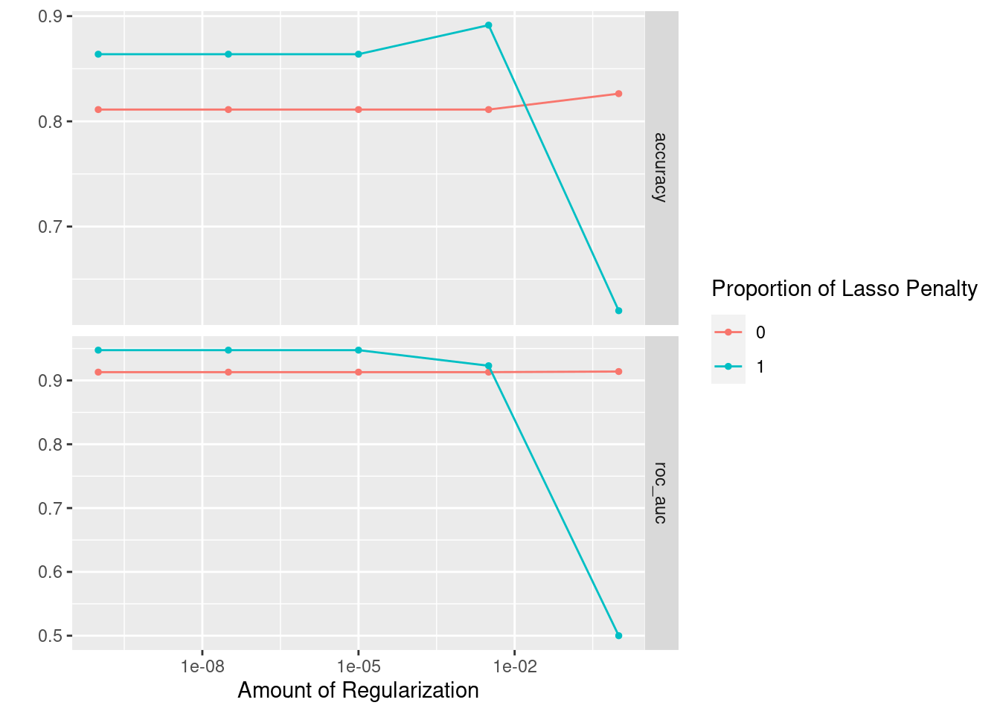 It seems that in general Lasso regression is better than Ridge regression and that regulization should be between 0.001 and 0.01.
We can now perform the final fit on the train data and evaluate using the test data:
logit_best <- logit_res %>% select_best("accuracy")
logit_final_wf <- logit_wf %>% finalize_workflow(logit_best)
logit_final <- logit_final_wf %>% last_fit(data_split)First let us retrieve the predictions and have a look at the confusion matrix
logit_cm <- logit_final %>% collect_predictions() %>%
conf_mat(.pred_class,Class)
print(autoplot(logit_cm, type="heatmap"))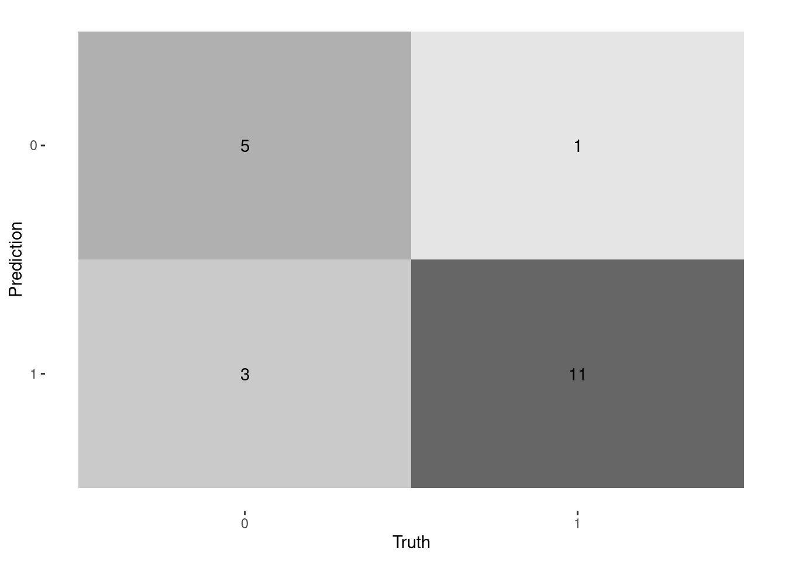
For the logistic regression we get a F1-score of 0.846.
2.5.2 Support Vector Machines (SVM)
We can recycle the recipe from logistic regression, and thus we begin be instantiate the SVM model:
svm_lin <- svm_linear(cost=tune()) %>%
set_mode("classification") %>%
set_engine("kernlab", scaled=TRUE)Next we set up the grid for the grid search. We use three levels of cost and two levels of margin:
svm_lin_grid <-
grid_regular(cost(),levels=5)Finally we set up a workflow using the model and the recipe and do the tuning:
Now let us have a look at the results
autoplot(svm_lin_res)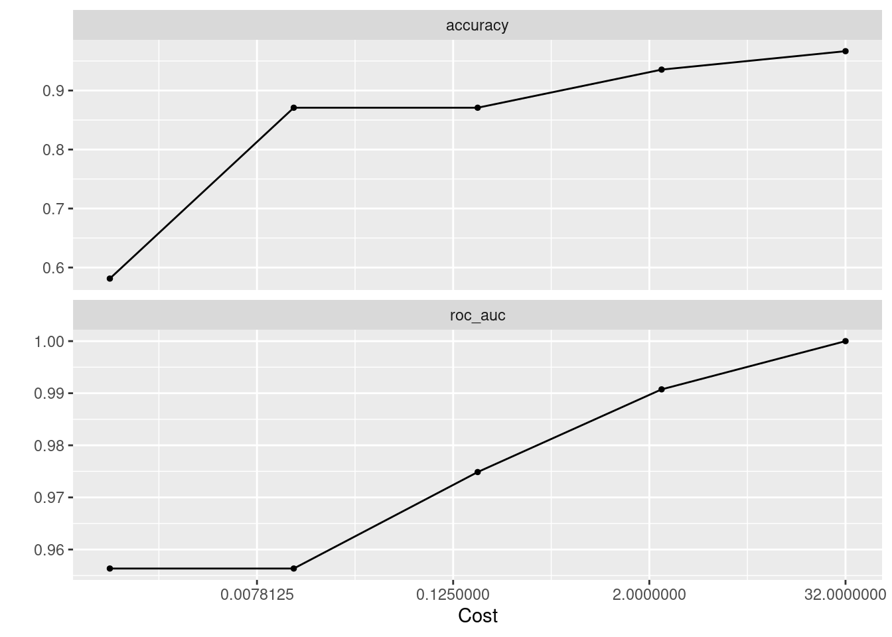 We find that a cost of 32.0 gives the best accuracy, and we can now perform the final fit on the train data and evaluate using the test data:
svm_lin_best <- svm_lin_res %>% select_best("accuracy")
svm_lin_final_wf <- svm_lin_wf %>% finalize_workflow(svm_lin_best)
svm_lin_final <- svm_lin_final_wf %>% last_fit(data_split)Finally let us retrieve the predictions and have a look at the confusion matrix
svm_lin_cm <- svm_lin_final %>% collect_predictions() %>%
conf_mat(.pred_class,Class)
print(autoplot(svm_lin_cm, type="heatmap"))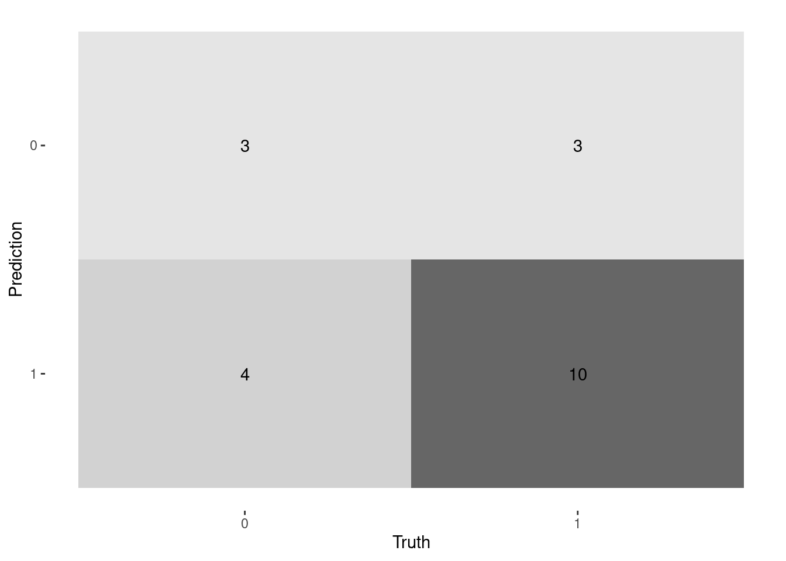
We find a F1-score of 0.741, which is significantly lower than for the logistic regression model.
We now repeat the process for polynomial af radial basis kernels with the exception that the polynomial kernel introduces a new tunable parameter for the polynomial degree and the radial basis kernel introduces the tunable sigma parameter.
Let us have a look at the results for the polynomial kernel:
autoplot(svm_pol_res)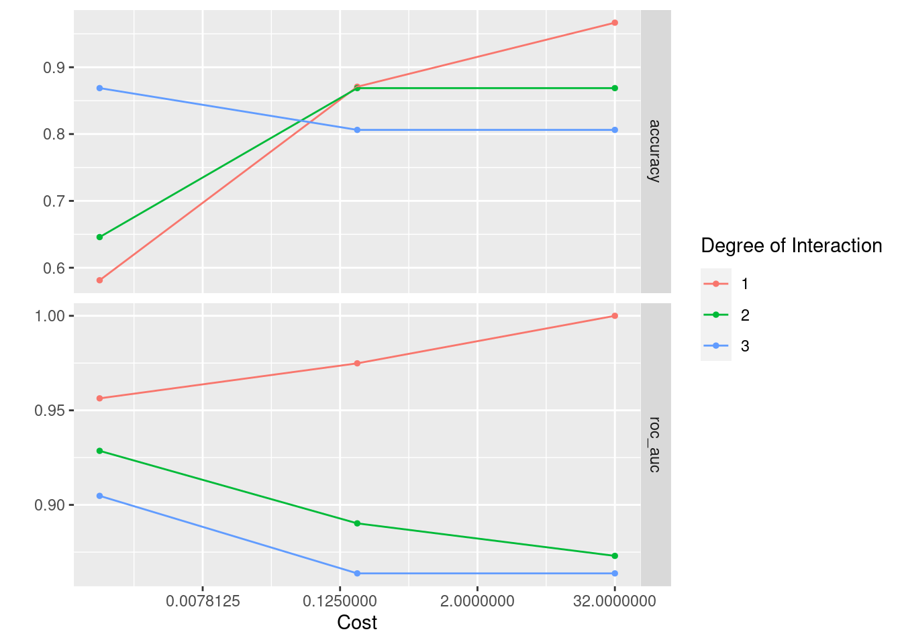 We see that a linear kernel performs best, so we will not deal anymore with the polynomial kernel.
For the radial basis kernel:
autoplot(svm_radial_res)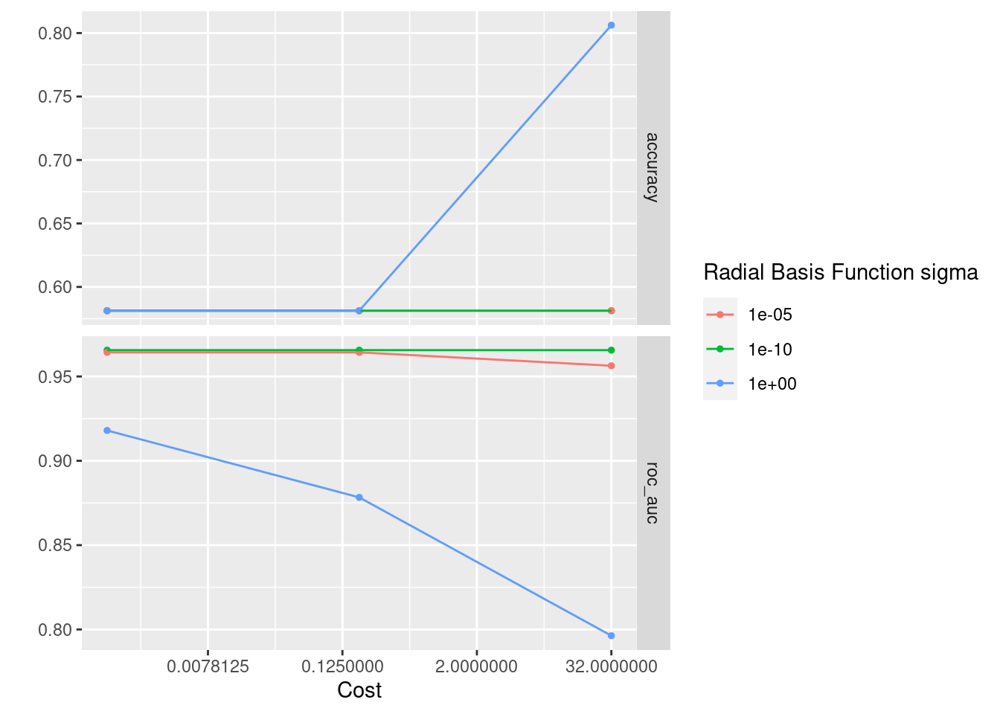
We find that a gives the best accuracy, and we can now perform the final fit on the train data and evaluate using the test data:
svm_radial_best <- svm_radial_res %>% select_best("accuracy")
svm_radial_final_wf <- svm_radial_wf %>%
finalize_workflow(svm_radial_best)
svm_radial_final <- svm_radial_final_wf %>% last_fit(data_split)Finally let us retrieve the predictions and have a look at the confusion matrix
svm_radial_cm <- svm_radial_final %>% collect_predictions() %>%
conf_mat(.pred_class,Class)
print(autoplot(svm_radial_cm, type="heatmap"))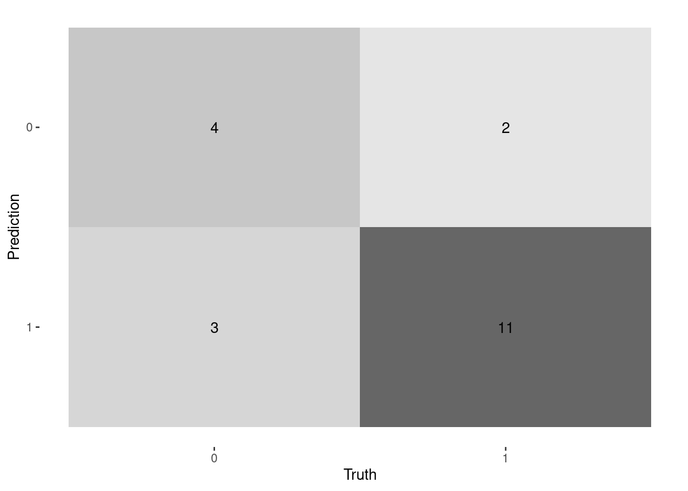 The F1-score for the radial basis function kernel is 0.815, which is better than for the linear kernel but less than for the logistic regression.
2.5.3 kNN classifier
We can recycle the recipe from earlier, and thus we begin be instantiate the kNN model:
knn_mod <- nearest_neighbor(neighbors= tune(), weight_func=tune(), dist_power = tune()) %>%
set_mode("classification") %>%
set_engine("kknn")Next we set up the grid for the grid search. We use three levels of cost and two levels of margin:
knn_grid <- grid_regular(neighbors(),weight_func(),dist_power(),levels=c(10,9,4))Finally we set up a workflow using the model and the recipe and do the tuning:
Now let us have a look at the results
autoplot(knn_res)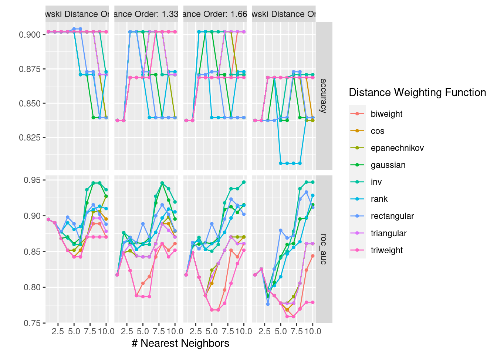 Based on accuracy it seems the best choise would be N=5, rectangular weight function and L1-distance.
knn_best <- knn_res %>% select_best("accuracy")
knn_final_wf <- knn_wf %>%
finalize_workflow(knn_best)
knn_final <- knn_final_wf %>% last_fit(data_split)Finally let us retrieve the predictions and have a look at the confusion matrix
knn_cm <- knn_final %>% collect_predictions() %>%
conf_mat(.pred_class,Class)
print(autoplot(knn_cm, type="heatmap"))We get a F1-score of 0,846 on par with the logistic regression model.
2.5.4 Decision tree classifier
For the decision tree classifier we will reuse the recipe from earlier, though we don’t need to encode factors and standardize numerical features for this model. Let’s start by instatiating the model:
tree <- decision_tree(tree_depth = tune(), min_n = tune()) %>%
set_mode("classification") %>%
set_engine("rpart")Next we set up the grid for the grid search. We use three levels of cost and two levels of margin:
tree_grid <-
grid_regular(min_n(),tree_depth(),levels=c(5,10))Finally we set up a workflow using the model and the recipe and do the tuning:
Now let us have a look at the results
autoplot(tree_res)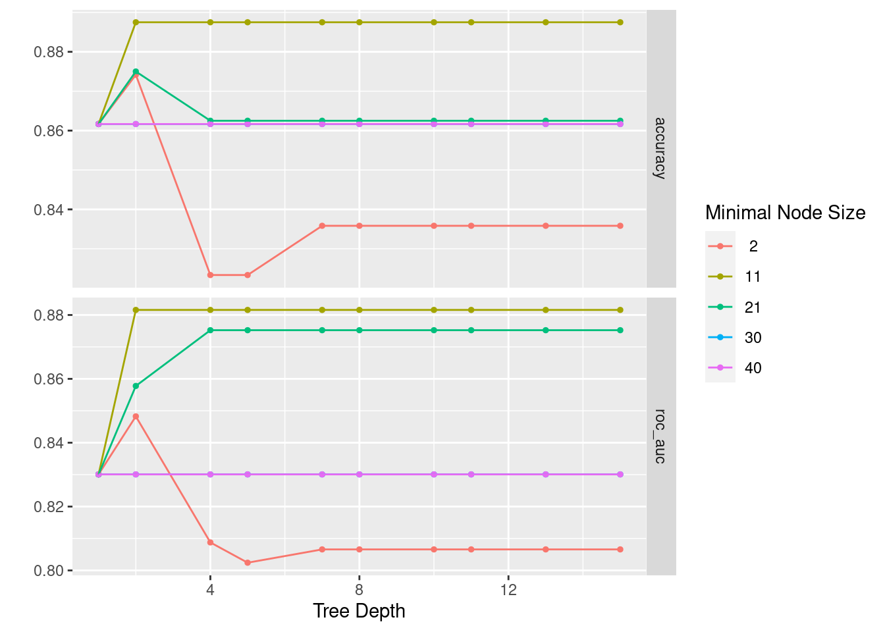
It seems that we get the best decision tree with a rather small tree and a rather big minimal node size. Let us construct the best tree and evaluate the performance:
tree_best <- tree_res %>% select_best("accuracy")
tree_final_wf <- tree_wf %>%
finalize_workflow(tree_best)
tree_final <- tree_final_wf %>% last_fit(data_split)Finally let us retrieve the predictions and have a look at the confusion matrix
tree_cm <- tree_final %>% collect_predictions() %>%
conf_mat(.pred_class,Class)
print(autoplot(tree_cm, type="heatmap"))
With an F1-score of 0,833, it performs slightly worse than the logistic regression and SVM.
As noted in the beginning, the decision tree classifier doesn’t need as much preprocessing as some of the other classifiers. So let’s end this chapter with a decision tree based on less preprocessing.
First let us define a new recipe:
tree_rec <- recipe(Class ~., data=train_data) %>%
update_role(BoosterVersion,Outcome,FlightNumber,Date,Serial, Longitude,Latitude, new_role="ID")Next we define a new workflow based on the new recipe:
Now let us have a look at the results to decide best parameters:
autoplot(tree_res2)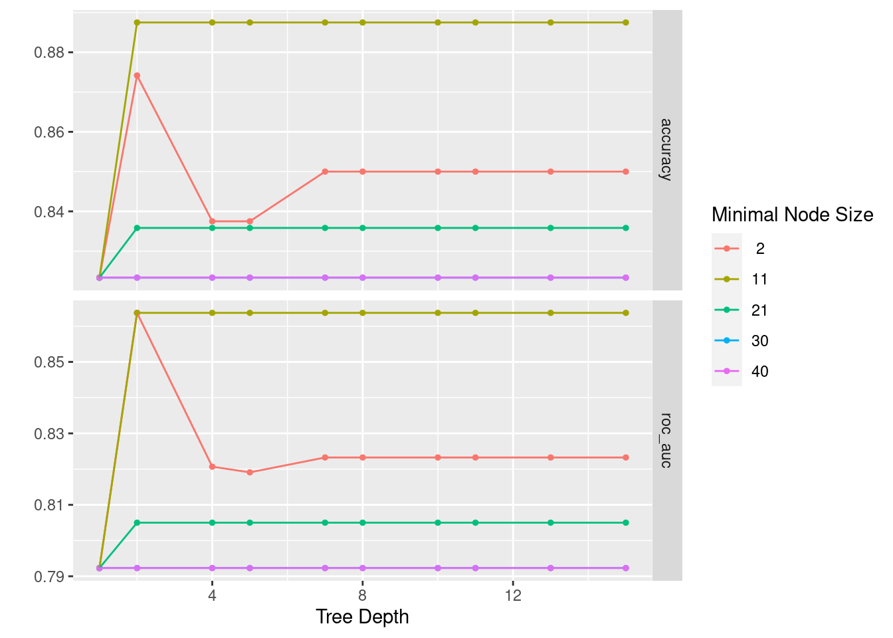
Agin, it seems that we get the best decision tree with a rather small tree and a rather big minimal node size. Let us construct the best tree and evaluate the performance:
tree_best2 <- tree_res2 %>% select_best("accuracy")
tree_final_wf2 <- tree_wf2 %>%
finalize_workflow(tree_best2)
tree_final2 <- tree_final_wf2 %>% last_fit(data_split)Finally let us retrieve the predictions and have a look at the confusion matrix
tree_cm2 <- tree_final2 %>% collect_predictions() %>%
conf_mat(.pred_class,Class)
print(autoplot(tree_cm2, type="heatmap"))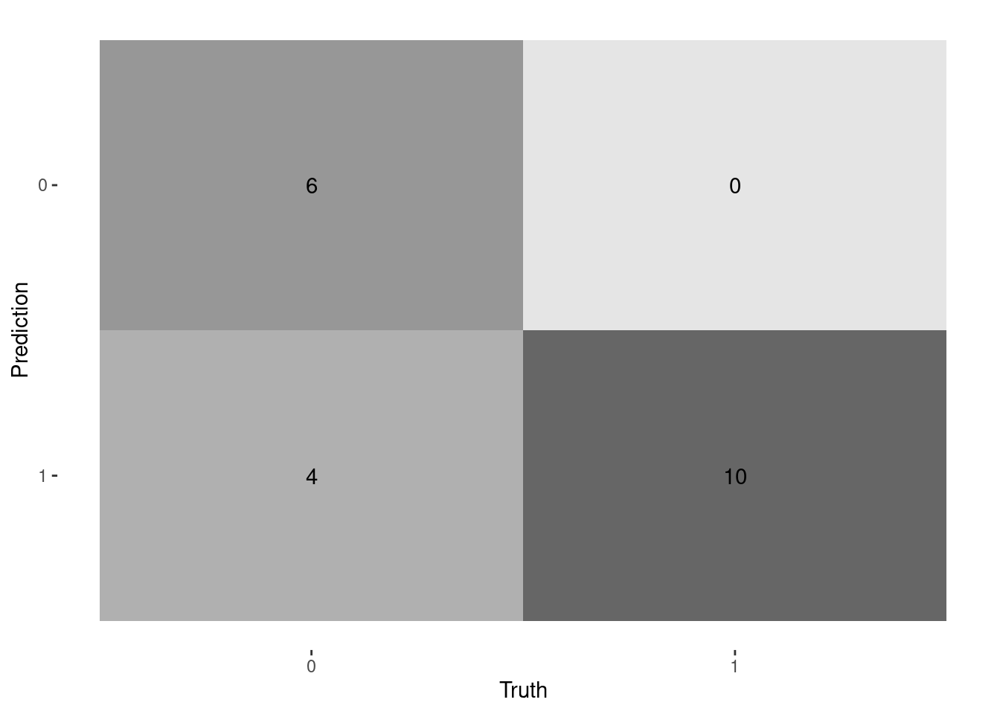 We see that we get exactly the same accuracy as we did with the preprocessing.
2.5.5 Outro
In this section we have fitted several models to the spaceX dataset. The best model turned out to be an L2-penalized logistic regression. Let us have a look at the predictors for the model:
logit_fitted <- logit_final_wf %>% fit(data)
tidy(logit_fitted) %>% filter(estimate !=0)## # A tibble: 19 × 3
## term estimate penalty
## <chr> <dbl> <dbl>
## 1 (Intercept) 1.40 0.00316
## 2 PayloadMass 0.0122 0.00316
## 3 Flights -3.37 0.00316
## 4 Reused 1.83 0.00316
## 5 Legs 3.56 0.00316
## 6 Block -0.596 0.00316
## 7 ReusedCount 8.73 0.00316
## 8 Orbit_GTO -0.438 0.00316
## 9 Orbit_HEO 1.25 0.00316
## 10 Orbit_ISS -0.910 0.00316
## 11 Orbit_LEO 0.847 0.00316
## 12 Orbit_PO -0.253 0.00316
## 13 Orbit_SO -1.54 0.00316
## 14 Orbit_VLEO -2.42 0.00316
## 15 LaunchSite_KSC.LC.39A 1.42 0.00316
## 16 LandingPad_X5e9e3032383ecb6bb234e7ca -0.301 0.00316
## 17 LandingPad_X5e9e3032383ecb761634e7cb -3.94 0.00316
## 18 LandingPad_X5e9e3033383ecbb9e534e7cc -0.462 0.00316
## 19 LandingPad_FALSE. -0.546 0.00316We see that the features most important for a successful outcome is if the first stage has been reused, and how many times it has been reused, if legs were used and the use of orbit HEO and LEO and launch site KSC LC-39A. These observations are in general in line with the findings in the EDA section.